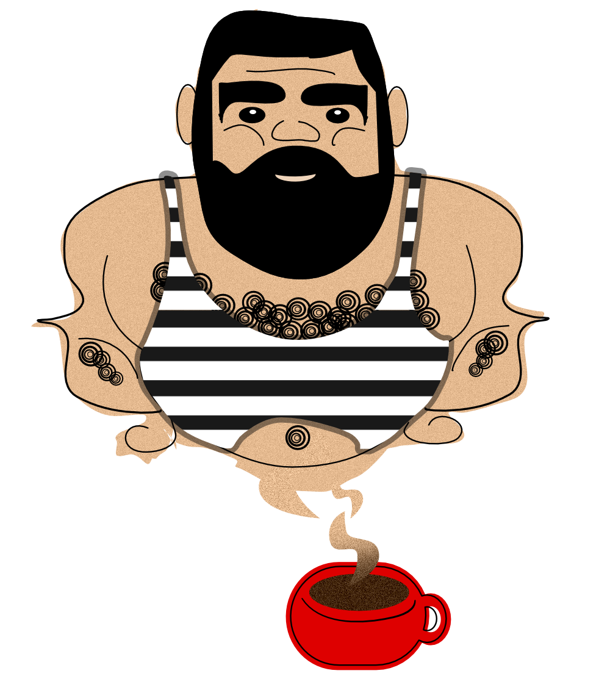

Before You Allow Any CopyWriter Into Your Inner Circle, Read This!
Dear Dan,
You’re looking for a copywriter to add to your ‘inner circle’.
Good. But why stop there?
Why not add an additional tech wizz to that circle that will complement Tega? Why not add a pretty competent illustrator to the circle, too?
What would THAT do to your Instagram?

You don’t have space for three more people, you say?
Not a problem.
You see, I am all three packed into one body. A copywriter, a tech wizz (16 years of software development and web dev), and an illustrator.
Bam! A winner.
Ok, ok. I am a fresh copywriter. But I’m determined. Passionate. Honest. Loyal.
I study copy like my life depends on it. (And it does!)
I'm on Ben Settle's EmailPLayers monthly newsletter. I "graduated" from John Carlton's Simple Writing System course. (The online live version with mentorship). I'm in Kevin's (Rogers) CopyChiefs. I do CopyHour every day, like a clock. Diligently.
I write emails for Jaime Tardy (Masters). I know you know her, so feel free to contact her.
Plus, I did some small gigs here and there... Here’s another sample of my recent work: http://minicourse.hearinghacks.com
Yours truthfully, Tanja